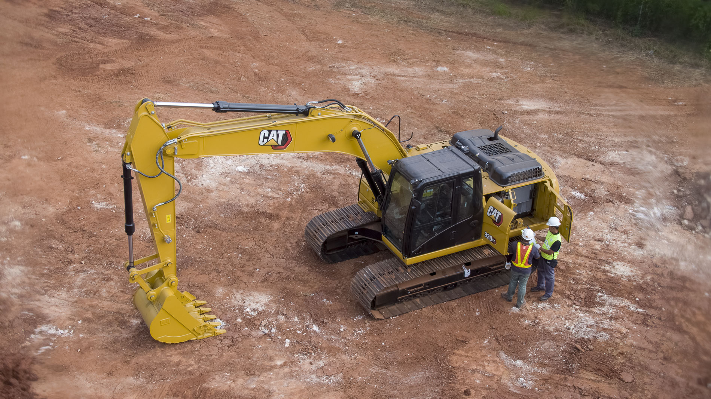
Ideal para excavación, zanjeo y movimiento de tierra.
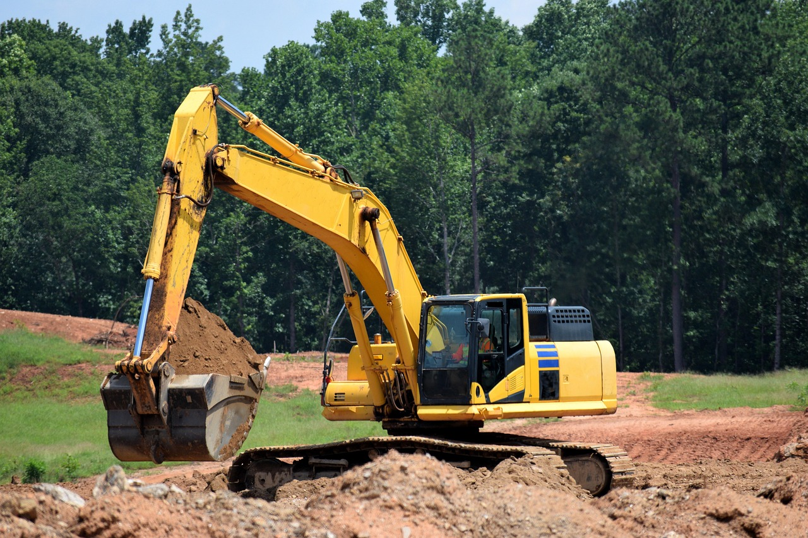
Versátil para excavación y carga en espacios reducidos.
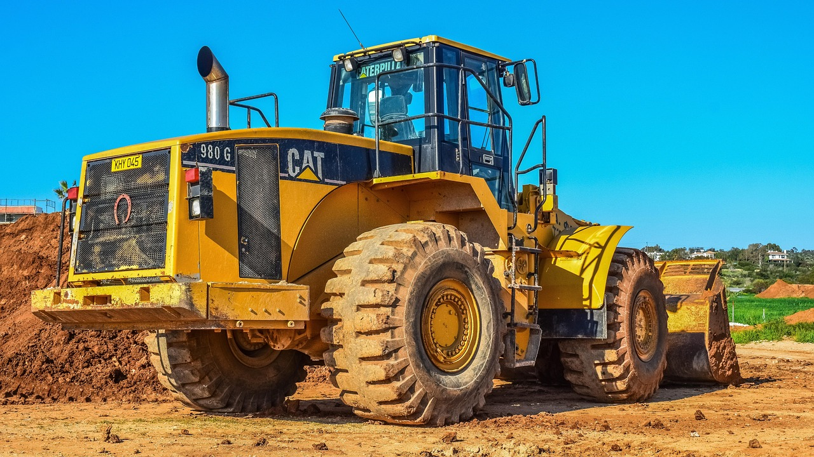
Nivelación de terrenos y remoción de material pesado.
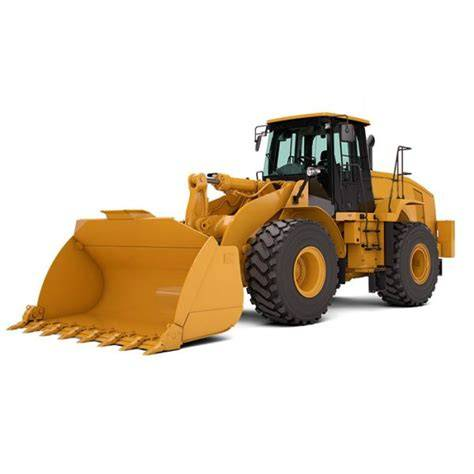
Carga y transporte de materiales a corta distancia.
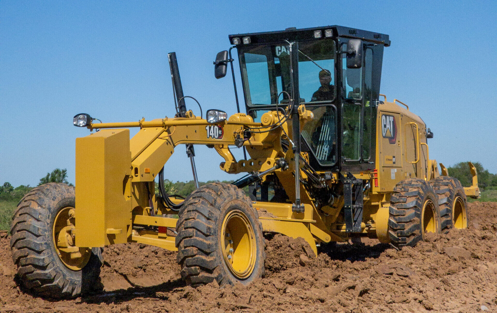
Nivelación de caminos y superficies para pavimentación.
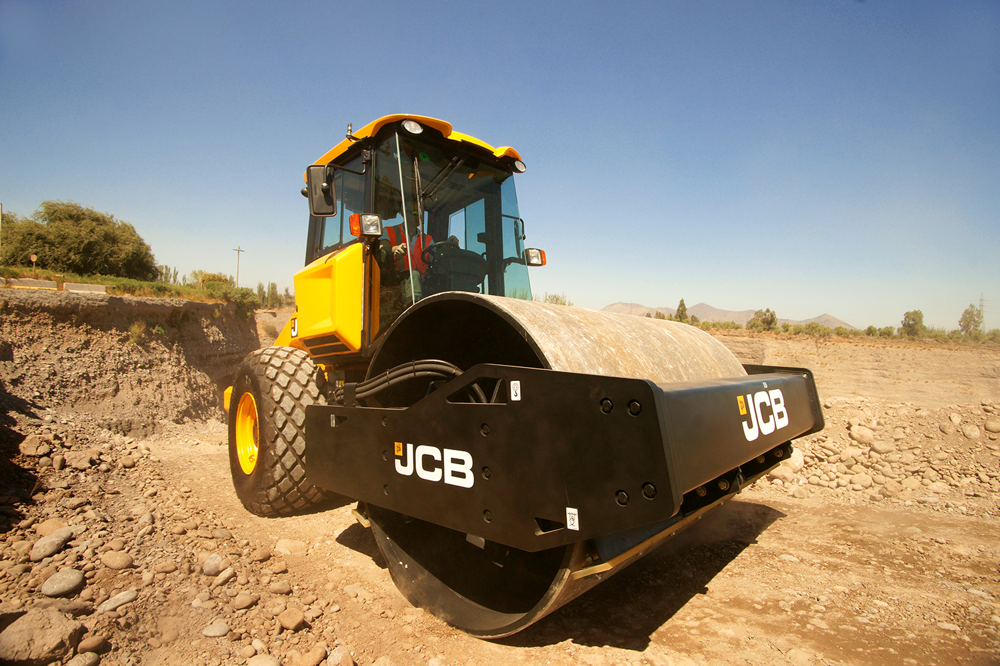
Compactación de suelo y asfalto en obras viales.
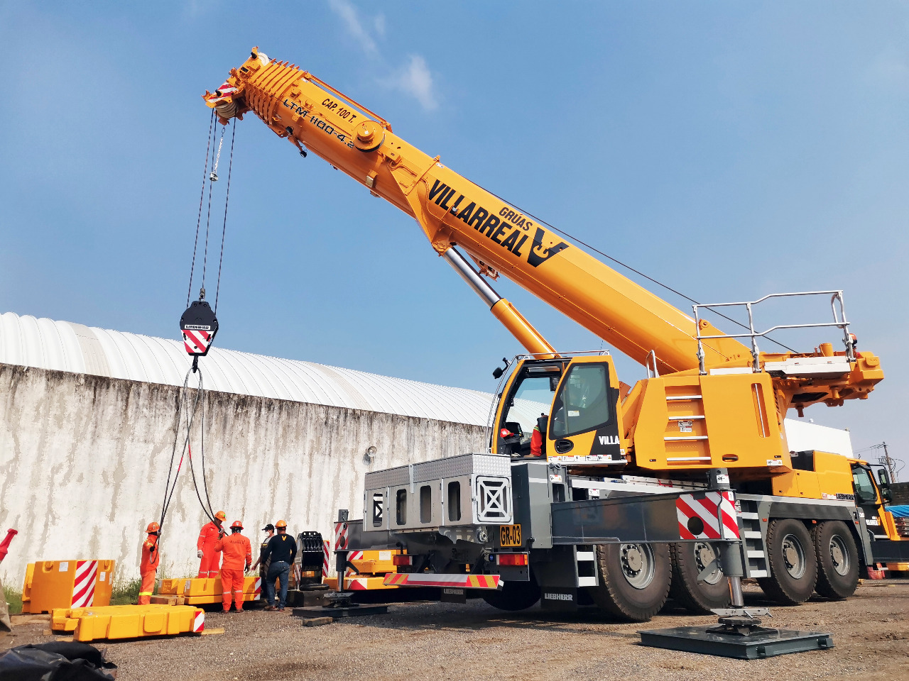
Levantamiento y traslado de cargas pesadas.
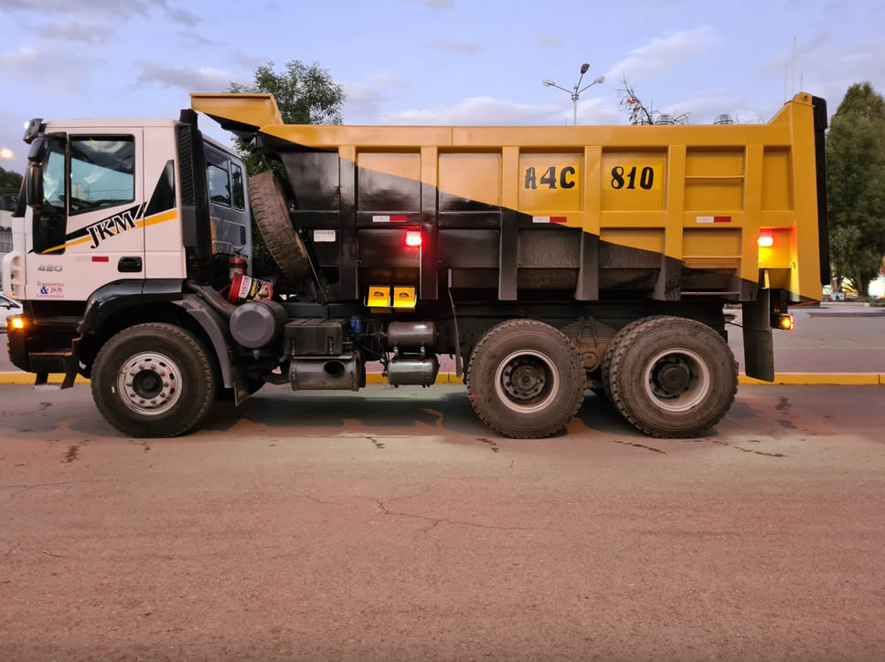
Transporte de tierra, escombros y materiales de construcción.
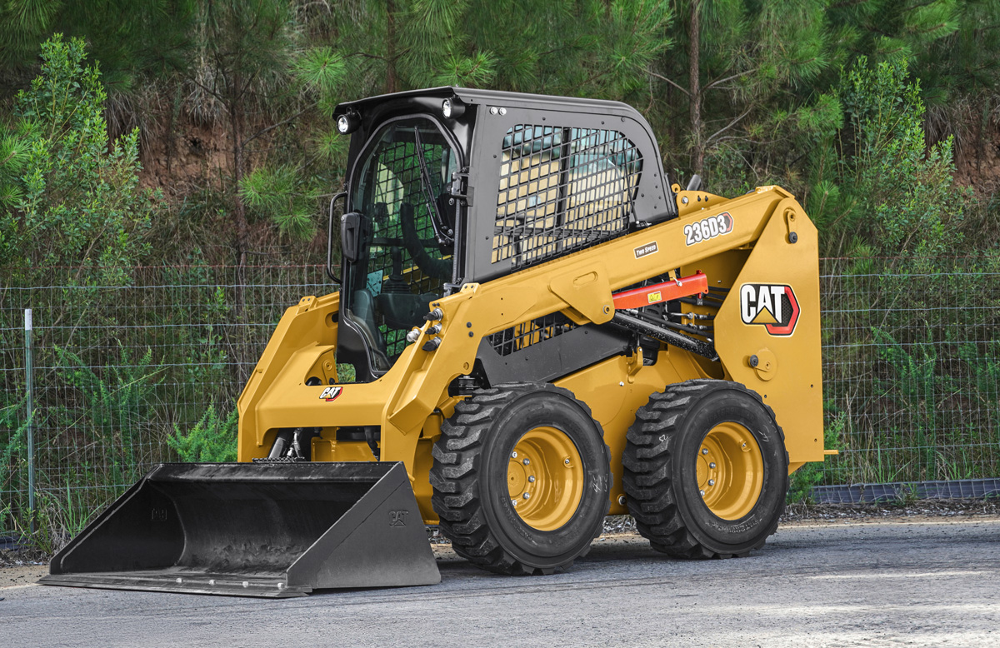
Perfecto para trabajos en espacios reducidos.
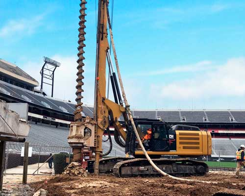
Perforación de suelos para cimentaciones y pozos.
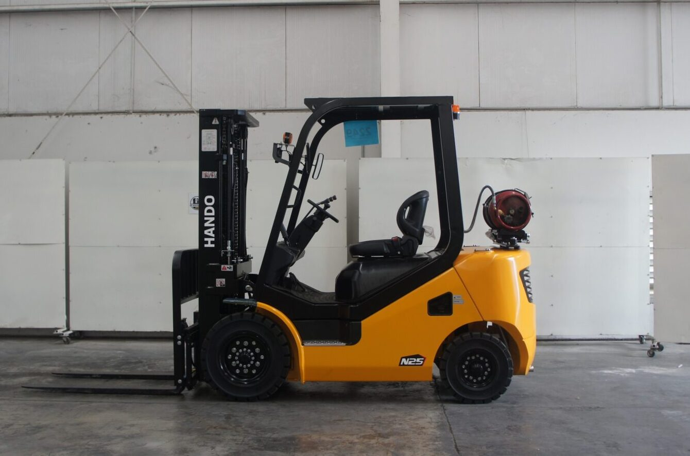
Movimiento y acomodo de materiales en bodega y obra.
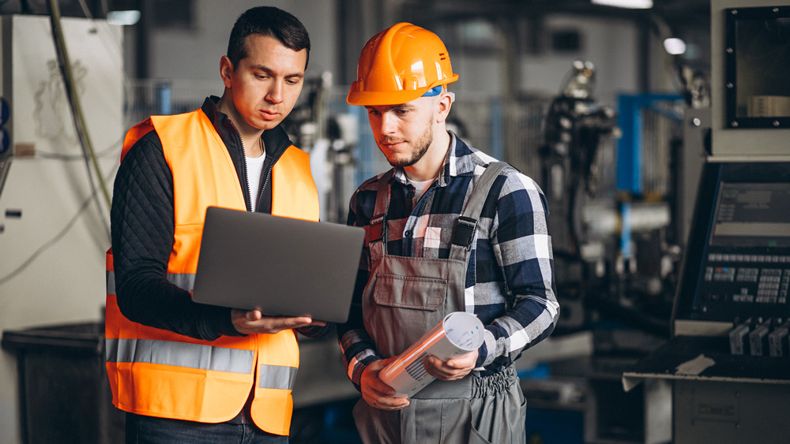
Servicio de acompañamiento y operador certificado incluido.